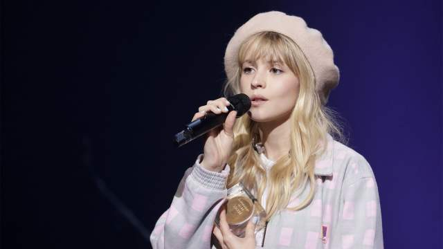
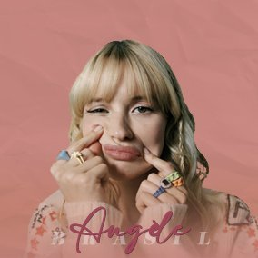

Angèle Joséphine Aimée Van Laeken (Uccle, Bruxelas, Bélgica; 3 de dezembro de 1995), mais conhecida como Angèle (pronúncia francesa: [ɑ̃ʒɛl]), é uma cantora, compositora, atriz, dubladora e produtora musical. Ela foi a cantora francófona mais ouvida em 2019, graças ao seu álbum de estreia "Brol".
Nascida na Bélgica, a infância da cantora resume bem sua veia musical. Angèle nasceu de um pai cantor, Marka, e de uma mãe atriz, Laurence Bibot. Sendo incentivada por seus pais no ramo musical, a jovem começou a tocar piano desde muito cedo. Sua infância e adolescência se passam em Linkebeek, nos subúrbios de Bruxelas, na Bélgica. A cantora Angèle estudou na Decroly School onde se desenvolveu em diferentes disciplinas artísticas.
Em sua época escolar, ela então se juntou a uma escola de jazz e ao mesmo tempo começou a se apresentar no grupo de música de seu pai. Uma curiosidade, é que Angèle é irmã do rapper Romeo Elvis (também bastante conhecido por sua carreira musical). De modo geral, Angèle ficou extremamente conhecida por meio de suas capas na rede social Instagram.
Considerada pela mídia por ser uma artista divertida e comprometida por suas entrevistas já concedidas, Angèle demonstra constantemente ser apaixonada por música e canto. É importante ressaltar, que Angèle iniciou sua carreira musical em cafés e bares nos subúrbios de Bruxelas.
Ao criar sua conta no Instagram onde conta com bastante humor em seu cotidiano, Angèle tornou-se ainda mais conhecida, onde também retrata sua rotina musical e o quanto possui vocação para a música (além de compartilhar fotos de seus pets fofissímos). Normalmente, a cantora gosta de fazer vídeos curtos que são peculiares e divertidos. Ela brinca com sua imagem de "menina bonita", exibindo-se sob uma luz diferente. Angèle sempre afirmou que não quer ser julgada por seu físico e também sempre se manifestou contra o sexismo na indústria musical.
Seu primeiro álbum de sucesso foi "Bruxelles" de Dick Annegarn. A intenção foi em fazer uma bela homenagem à sua cidade natal, então, a música fez com que ela fosse reconhecida e apreciada na internet.
Angèle é uma artista única e busca de forma incessante quebrar paradigmas e estigmas sociais, onde se considera, uma mulher feminista. Em "Balance Ton Quoi", Angèle explica bem o conceito do feminismo em seu clip musical. Ela compõe palavras, música e cria seu próprio selo: Angèle VL. Com seu estilo pop urbano, ela abriu para Damso antes de encher o Trianon em Paris duas vezes - em maio e novembro. Angèle também se apresentará no Olympia em março de 2019.
Em 2020, Angèle comemorou os 2 anos do seu primeiro álbum, "Brol". A obra obtém o título de disco mais vendido de 2019, na França. Em 2020, a interpréte realizou uma música com nada menos que a popstar Dua Lipa! Ao ser lançada em outubro de 2020, a música "Fever" em 2021 já ultrapassou mais de 69 milhões de views.
Atualmente, Angèle no mês de abril realizou uma campanha de praia para a marca Chanel, além desse feito, a cantora andou pelo tapete vermelho no evento Chanel in Cannes (74th Festival de Cannes) onde esteve presente usando CHANEL Haute Couture. Para o mês de julho, no dia 21, ela dará voz (dublará) a Lola Bunny em Space Jam - New Era, que será apresentado em 21 de julho nos cinemas.
@angele_vl
Gostou de conhecer a Angèle?